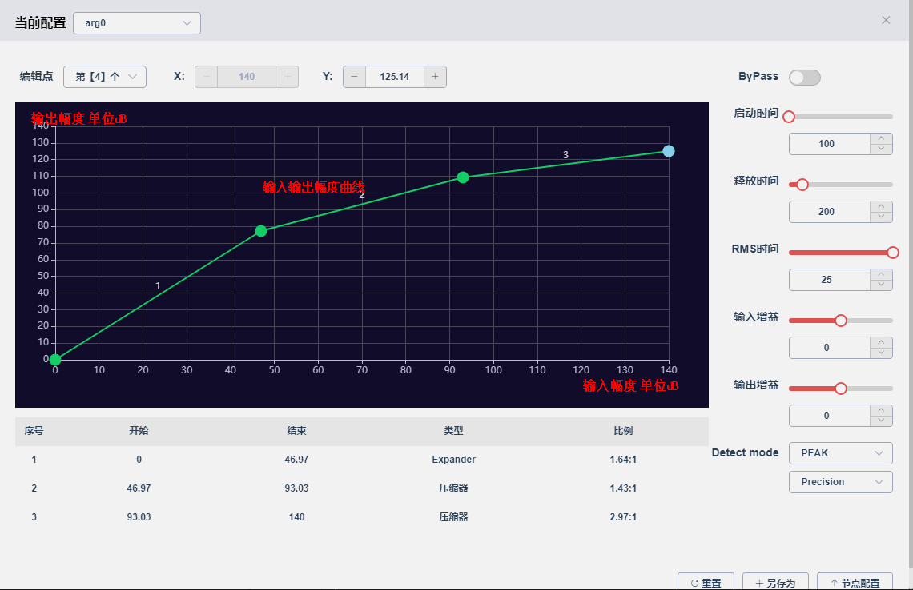
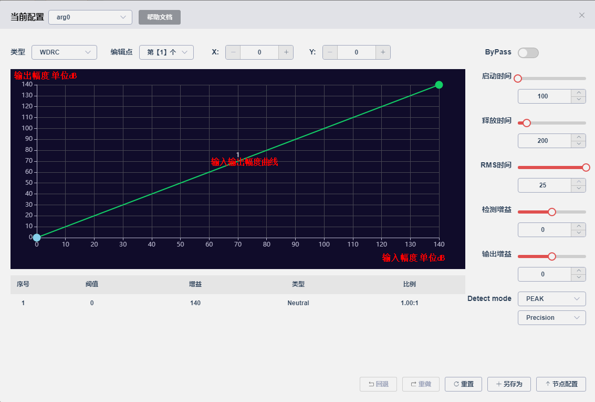

14.7. 动态范围压缩（DRC）
14.7.1. 动态范围压缩
14.7.1.1. 功能介绍
DRC是对输入信号进行动态范围控制的模块。DRC 最多支持4段，可以通过输入输出幅度曲线设置为限幅器，压缩器，扩展器等多种类型。在输入输出幅度曲线上双击可添加阈值，将鼠标放在绿色的阈值上点右键可进行编辑与删除。 横坐标是输入幅度.纵坐标是输出幅度，单位是dB，为归一化的dB数值，计算公式：20log10(input_value)。如16bit PCM满幅大小32767,$ 20log10(32767) \approx 90dB$

14.7.1.2. 参数说明
启动时间：当输入信号幅度超过所设置的阈值时，DRC开始控制所需要的时间。
释放时间：当输入信号幅度低于所设置的阈值时，DRC恢复到原始信号所需要的时间
RMS时间：rms检测时间，当选择RMS时才生效。
输入增益：对输入DRC信号进行预衰减或者预放大。
输出增益：对输出DRC信号进行衰减或者放大。
PEAK或者RMS选项：DRC使用PEAK或者RMS模式，RMS失真度比PEAK低，但RMS所需要的buf更大以及所需的mips更多。
Precision或者Precision+选项：Precosion+比Precision精度更高，但所需要的mips更多。
bypass：勾选后DRC不运行,占用的内存也会释放
14.7.2. 动态范围压缩检测器(DRC Detector)
14.7.2.1. 功能介绍
DRC Detector 根据DET端口的信号变化，控制IN端口输入信号的动态范围，（DET端口可以是其他数据流作为检测源，例如用混响流的某个信号作为输入源，控制播歌流IN端口的信号）。DRC Detector最多支持4段，可以通过输入输出幅度曲线设置为限幅器，压缩器，扩展器等多种类型。在输入输出幅度曲线上双击可添加阈值，将鼠标放在绿色的阈值上点右键可进行编辑与删除。 横坐标是输入幅度.纵坐标是输出幅度，单位是dB，为归一化的dB数值，计算公式：20log10(input_value)。如16bit PCM满幅大小32767,$ 20log10(32767) \approx 90dB$

14.7.2.2. 参数说明
启动时间：当输入信号幅度超过所设置的阈值时，DRC Detector开始控制所需要的时间。
释放时间：当输入信号幅度低于所设置的阈值时，DRC Detector恢复到原始信号所需要的时间
RMS时间：rms检测时间，当选择RMS时才生效。
检测增益：对DET端口的信号进行预衰减或者预放大。
输出增益：对输出DRC Detector信号进行衰减或者放大。
PEAK或者RMS选项：DRC Detector使用PEAK或者RMS模式，RMS失真度比PEAK低，但RMS所需要的buf更大以及所需的mips更多。
Precision或者Precision+选项：Precosion+比Precision精度更高，但所需要的mips更多。
bypass：勾选后DRC Detector不运行,占用的内存也会释放